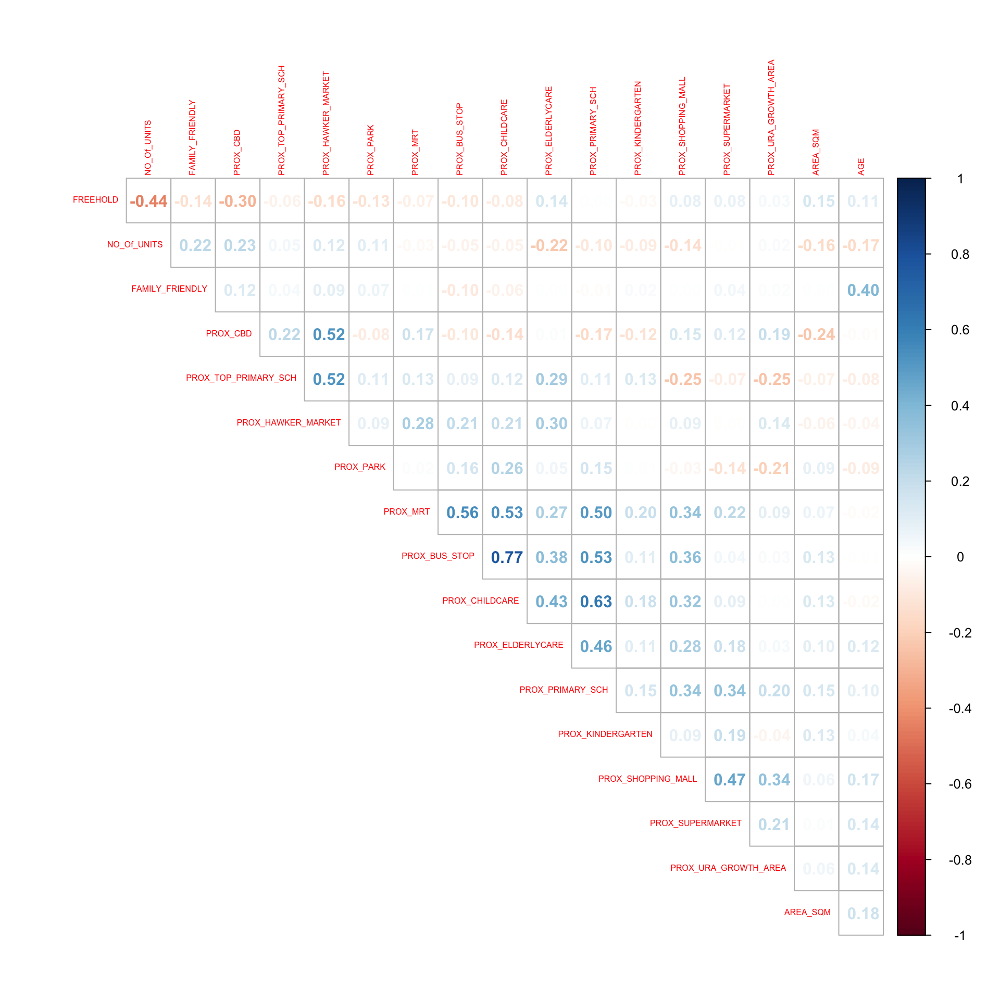
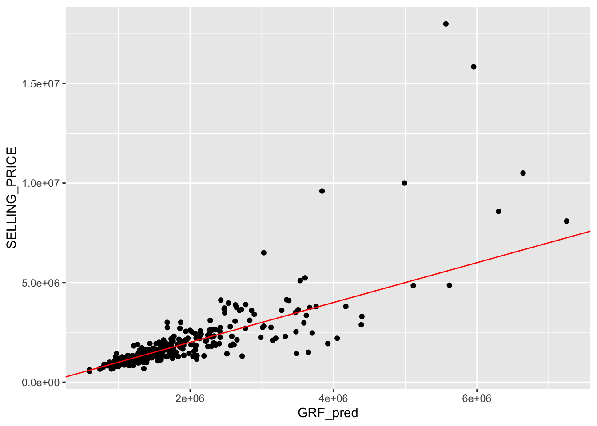

pacman::p_load(sf, spdep, GWmodel, SpatialML,
tmap, rsample, Metrics,
ranger, tidyverse)Hands-on Exercise 10: Geographically Weighted Predictive Models
14.1 Overview
This exercise follows Chapter 14 of R for Geospatial Data Science and Analytics: building predictive models for property resale prices with a non-spatial multiple linear regression, a geographically weighted regression (GWR), a random forest and a geographical random forest (GRF), and comparing how well each predicts unseen data.
NoteAbout the data
The textbook uses mdata.rds, a prepared HDB resale data set that was not made available for this exercise. The same workflow is therefore applied to the 2015 private condominium resale data (Condo_resale_2015.csv) used in Hands-on Exercise 9. It contains the same kinds of variables: the resale price, structural attributes (floor area, age) and proximity measures to amenities, together with the coordinates of each transaction. Variable names in the models below are adapted accordingly.
14.2 Getting Started
The model-fitting steps in this exercise (bandwidth search, GWR prediction and the geographical random forest) are slow, so each one saves its result to data/model/ the first time it runs and reads it back afterwards.
dir.create("data/model", recursive = TRUE, showWarnings = FALSE)14.3 Preparing Data
14.3.1 Importing the data and converting it to sf
condo_resale <- read_csv("data/aspatial/Condo_resale_2015.csv")mdata <- condo_resale %>%
st_as_sf(coords = c("LONGITUDE", "LATITUDE"),
crs = 4326) %>%
st_transform(crs = 3414) %>%
select(SELLING_PRICE, AREA_SQM, AGE,
PROX_CBD, PROX_CHILDCARE, PROX_ELDERLYCARE,
PROX_URA_GROWTH_AREA, PROX_HAWKER_MARKET,
PROX_KINDERGARTEN, PROX_MRT, PROX_PARK,
PROX_PRIMARY_SCH, PROX_TOP_PRIMARY_SCH,
PROX_SHOPPING_MALL, PROX_SUPERMARKET,
PROX_BUS_STOP, NO_Of_UNITS,
FAMILY_FRIENDLY, FREEHOLD)write_rds(mdata, "data/model/mdata.rds")glimpse(mdata)Rows: 1,436
Columns: 20
$ SELLING_PRICE <dbl> 3000000, 3880000, 3325000, 4250000, 1400000, 1320…
$ AREA_SQM <dbl> 309, 290, 248, 127, 145, 139, 218, 141, 165, 168,…
$ AGE <dbl> 30, 32, 33, 7, 28, 22, 24, 24, 27, 31, 17, 22, 6,…
$ PROX_CBD <dbl> 7.941259, 6.609797, 6.898000, 4.038861, 11.783402…
$ PROX_CHILDCARE <dbl> 0.16597932, 0.28027246, 0.42922669, 0.39473543, 0…
$ PROX_ELDERLYCARE <dbl> 2.5198118, 1.9333338, 0.5021395, 1.9910316, 1.121…
$ PROX_URA_GROWTH_AREA <dbl> 6.618741, 7.505109, 6.463887, 4.906512, 6.410632,…
$ PROX_HAWKER_MARKET <dbl> 1.76542207, 0.54507614, 0.37789301, 1.68259969, 0…
$ PROX_KINDERGARTEN <dbl> 0.05835552, 0.61592412, 0.14120309, 0.38200076, 0…
$ PROX_MRT <dbl> 0.5607188, 0.6584461, 0.3053433, 0.6910183, 0.528…
$ PROX_PARK <dbl> 1.1710446, 0.1992269, 0.2779886, 0.9832843, 0.116…
$ PROX_PRIMARY_SCH <dbl> 1.6340256, 0.9747834, 1.4715016, 1.4546324, 0.709…
$ PROX_TOP_PRIMARY_SCH <dbl> 3.3273195, 0.9747834, 1.4715016, 2.3006394, 0.709…
$ PROX_SHOPPING_MALL <dbl> 2.2102717, 2.9374279, 1.2256850, 0.3525671, 1.307…
$ PROX_SUPERMARKET <dbl> 0.9103958, 0.5900617, 0.4135583, 0.4162219, 0.581…
$ PROX_BUS_STOP <dbl> 0.10336166, 0.28673408, 0.28504777, 0.29872340, 0…
$ NO_Of_UNITS <dbl> 18, 20, 27, 30, 30, 31, 32, 32, 32, 32, 34, 34, 3…
$ FAMILY_FRIENDLY <dbl> 0, 0, 0, 0, 0, 1, 1, 0, 1, 1, 0, 0, 0, 0, 0, 0, 0…
$ FREEHOLD <dbl> 1, 1, 1, 1, 1, 1, 1, 1, 1, 0, 1, 1, 1, 1, 1, 1, 1…
$ geometry <POINT [m]> POINT (22085.12 29951.54), POINT (25656.84 …14.3.2 Checking for overlapping points
overlapping_points <- mdata %>%
mutate(overlap = lengths(st_equals(., .)) > 1)
summary(overlapping_points$overlap) Mode FALSE TRUE
logical 1332 104 Many transactions share exactly the same coordinates because units in the same development have the same location. Identical locations make the local distance matrices used by GWR and GRF degenerate, so the points are jittered slightly.
14.3.3 Spatial jitter
set.seed(1234)
mdata <- mdata %>%
st_jitter(amount = 1)mdata %>%
mutate(overlap = lengths(st_equals(., .)) > 1) %>%
pull(overlap) %>%
summary() Mode FALSE
logical 1436 14.3.4 Data sampling
set.seed(1234)
resale_split <- initial_split(mdata,
prop = 7.5/10)
train_data <- training(resale_split)
test_data <- testing(resale_split)write_rds(train_data, "data/model/train_data.rds")
write_rds(test_data, "data/model/test_data.rds")14.4 Computing Correlation Matrix
mdata_nogeo <- mdata %>%
st_drop_geometry()
corrplot::corrplot(cor(mdata_nogeo[, 2:19]),
diag = FALSE,
order = "AOE",
tl.pos = "td",
tl.cex = 0.5,
method = "number",
type = "upper")
Following Hands-on Exercise 9, the variables that were not significant in the global model (hawker market, kindergarten, top primary school and supermarket proximity) are left out of the models below.
14.5 Retrieving the Stored Data
train_data <- read_rds("data/model/train_data.rds")
test_data <- read_rds("data/model/test_data.rds")14.6 Building a non-spatial multiple linear regression
price_mlr <- lm(SELLING_PRICE ~ AREA_SQM + AGE +
PROX_CBD + PROX_CHILDCARE + PROX_ELDERLYCARE +
PROX_URA_GROWTH_AREA + PROX_MRT + PROX_PARK +
PROX_PRIMARY_SCH + PROX_SHOPPING_MALL +
PROX_BUS_STOP + NO_Of_UNITS +
FAMILY_FRIENDLY + FREEHOLD,
data = train_data)
summary(price_mlr)
Call:
lm(formula = SELLING_PRICE ~ AREA_SQM + AGE + PROX_CBD + PROX_CHILDCARE +
PROX_ELDERLYCARE + PROX_URA_GROWTH_AREA + PROX_MRT + PROX_PARK +
PROX_PRIMARY_SCH + PROX_SHOPPING_MALL + PROX_BUS_STOP + NO_Of_UNITS +
FAMILY_FRIENDLY + FREEHOLD, data = train_data)
Residuals:
Min 1Q Median 3Q Max
-3137780 -263427 -28092 224188 5314473
Coefficients:
Estimate Std. Error t value Pr(>|t|)
(Intercept) 683286.15 98634.14 6.927 7.41e-12 ***
AREA_SQM 11372.47 337.28 33.718 < 2e-16 ***
AGE -17031.81 2609.40 -6.527 1.04e-10 ***
PROX_CBD -77343.30 5357.13 -14.437 < 2e-16 ***
PROX_CHILDCARE -234251.98 100132.71 -2.339 0.019499 *
PROX_ELDERLYCARE 150522.05 37215.45 4.045 5.62e-05 ***
PROX_URA_GROWTH_AREA 42340.35 11035.85 3.837 0.000132 ***
PROX_MRT -236561.73 52836.31 -4.477 8.38e-06 ***
PROX_PARK 512017.80 61599.25 8.312 2.85e-16 ***
PROX_PRIMARY_SCH 43429.64 55923.67 0.777 0.437575
PROX_SHOPPING_MALL -179717.54 33812.66 -5.315 1.30e-07 ***
PROX_BUS_STOP 616862.34 122837.58 5.022 6.00e-07 ***
NO_Of_UNITS -204.22 80.45 -2.538 0.011278 *
FAMILY_FRIENDLY 55895.02 43972.00 1.271 0.203954
FREEHOLD 325534.26 44326.14 7.344 4.12e-13 ***
---
Signif. codes: 0 '***' 0.001 '**' 0.01 '*' 0.05 '.' 0.1 ' ' 1
Residual standard error: 602200 on 1062 degrees of freedom
Multiple R-squared: 0.7025, Adjusted R-squared: 0.6986
F-statistic: 179.1 on 14 and 1062 DF, p-value: < 2.2e-16write_rds(price_mlr, "data/model/price_mlr.rds")14.7 GWR predictive method
14.7.1 Computing adaptive bandwidth
if (!file.exists("data/model/bw_adaptive.rds")) {
bw_adaptive <- bw.gwr(
formula = SELLING_PRICE ~ AREA_SQM + AGE +
PROX_CBD + PROX_CHILDCARE + PROX_ELDERLYCARE +
PROX_URA_GROWTH_AREA + PROX_MRT + PROX_PARK +
PROX_PRIMARY_SCH + PROX_SHOPPING_MALL +
PROX_BUS_STOP + NO_Of_UNITS +
FAMILY_FRIENDLY + FREEHOLD,
data = train_data,
approach = "CV",
kernel = "gaussian",
adaptive = TRUE,
longlat = FALSE)
write_rds(bw_adaptive, "data/model/bw_adaptive.rds")
}
bw_adaptive <- read_rds("data/model/bw_adaptive.rds")
bw_adaptive[1] 1914.7.2 Constructing the adaptive bandwidth GWR model
if (!file.exists("data/model/gwr_adaptive.rds")) {
gwr_adaptive <- gwr.basic(
formula = SELLING_PRICE ~ AREA_SQM + AGE +
PROX_CBD + PROX_CHILDCARE + PROX_ELDERLYCARE +
PROX_URA_GROWTH_AREA + PROX_MRT + PROX_PARK +
PROX_PRIMARY_SCH + PROX_SHOPPING_MALL +
PROX_BUS_STOP + NO_Of_UNITS +
FAMILY_FRIENDLY + FREEHOLD,
data = train_data,
bw = bw_adaptive,
kernel = "gaussian",
adaptive = TRUE,
longlat = FALSE)
write_rds(gwr_adaptive, "data/model/gwr_adaptive.rds")
}14.7.3 Retrieving the GWR output object
gwr_adaptive <- read_rds("data/model/gwr_adaptive.rds")
gwr_adaptive ***********************************************************************
* Package GWmodel *
***********************************************************************
Program starts at: 2026-11-05 20:07:18.432568
Call:
gwr.basic(formula = SELLING_PRICE ~ AREA_SQM + AGE + PROX_CBD +
PROX_CHILDCARE + PROX_ELDERLYCARE + PROX_URA_GROWTH_AREA +
PROX_MRT + PROX_PARK + PROX_PRIMARY_SCH + PROX_SHOPPING_MALL +
PROX_BUS_STOP + NO_Of_UNITS + FAMILY_FRIENDLY + FREEHOLD,
data = train_data, bw = bw_adaptive, kernel = "gaussian",
adaptive = TRUE, longlat = FALSE)
Dependent (y) variable: SELLING_PRICE
Independent variables: AREA_SQM AGE PROX_CBD PROX_CHILDCARE PROX_ELDERLYCARE PROX_URA_GROWTH_AREA PROX_MRT PROX_PARK PROX_PRIMARY_SCH PROX_SHOPPING_MALL PROX_BUS_STOP NO_Of_UNITS FAMILY_FRIENDLY FREEHOLD
Number of data points: 1077
***********************************************************************
* Results of Global Regression *
***********************************************************************
Call:
lm(formula = formula, data = data)
Residuals:
Min 1Q Median 3Q Max
-3137780 -263427 -28092 224188 5314473
Coefficients:
Estimate Std. Error t value Pr(>|t|)
(Intercept) 683286.15 98634.14 6.927 7.41e-12 ***
AREA_SQM 11372.47 337.28 33.718 < 2e-16 ***
AGE -17031.81 2609.40 -6.527 1.04e-10 ***
PROX_CBD -77343.30 5357.13 -14.437 < 2e-16 ***
PROX_CHILDCARE -234251.98 100132.71 -2.339 0.019499 *
PROX_ELDERLYCARE 150522.05 37215.45 4.045 5.62e-05 ***
PROX_URA_GROWTH_AREA 42340.35 11035.85 3.837 0.000132 ***
PROX_MRT -236561.73 52836.31 -4.477 8.38e-06 ***
PROX_PARK 512017.80 61599.25 8.312 2.85e-16 ***
PROX_PRIMARY_SCH 43429.64 55923.67 0.777 0.437575
PROX_SHOPPING_MALL -179717.54 33812.66 -5.315 1.30e-07 ***
PROX_BUS_STOP 616862.34 122837.58 5.022 6.00e-07 ***
NO_Of_UNITS -204.22 80.45 -2.538 0.011278 *
FAMILY_FRIENDLY 55895.02 43972.00 1.271 0.203954
FREEHOLD 325534.26 44326.14 7.344 4.12e-13 ***
---Significance stars
Signif. codes: 0 '***' 0.001 '**' 0.01 '*' 0.05 '.' 0.1 ' ' 1
Residual standard error: 602200 on 1062 degrees of freedom
Multiple R-squared: 0.7025
Adjusted R-squared: 0.6986
F-statistic: 179.1 on 14 and 1062 DF, p-value: < 2.2e-16
***Extra Diagnostic information
Residual sum of squares: 3.850976e+14
Sigma(hat): 598523.5
AIC: 31739.38
AICc: 31739.89
BIC: 30853.8
***********************************************************************
* Results of Geographically Weighted Regression *
***********************************************************************
*********************Model calibration information*********************
Kernel function: gaussian
Adaptive bandwidth: 19 (number of nearest neighbours)
Regression points: the same locations as observations are used.
Distance metric: Euclidean distance metric is used.
****************Summary of GWR coefficient estimates:******************
Min. 1st Qu. Median 3rd Qu.
Intercept -5.9487e+08 -1.2183e+05 9.9517e+05 2.2210e+06
AREA_SQM 2.5995e+03 6.0405e+03 7.4973e+03 1.1193e+04
AGE -8.9524e+04 -2.7714e+04 -1.2972e+04 -6.2649e+03
PROX_CBD -1.6820e+07 -3.6339e+05 -1.0908e+05 -3.7184e+04
PROX_CHILDCARE -3.6606e+06 -2.8977e+05 -2.1638e+04 3.4673e+05
PROX_ELDERLYCARE -5.8673e+06 -1.2615e+05 5.2178e+04 3.2460e+05
PROX_URA_GROWTH_AREA -6.8697e+07 -4.6848e+03 8.6109e+04 3.7327e+05
PROX_MRT -2.2590e+08 -8.1816e+05 -2.0396e+05 4.4128e+04
PROX_PARK -3.3019e+06 -2.1611e+05 1.7856e+05 5.9350e+05
PROX_PRIMARY_SCH -4.0902e+06 -2.2369e+05 -2.6867e+04 2.6395e+05
PROX_SHOPPING_MALL -1.9604e+07 -1.8762e+05 -1.1318e+04 1.7460e+05
PROX_BUS_STOP -3.6686e+06 -1.0827e+05 4.1316e+05 1.6581e+06
NO_Of_UNITS -2.9907e+03 -2.3847e+02 -4.2665e+01 1.3772e+02
FAMILY_FRIENDLY -8.4758e+06 -7.4778e+04 1.8327e+04 1.3480e+05
FREEHOLD -1.0766e+06 3.6167e+04 1.8188e+05 3.9395e+05
Max.
Intercept 1.1958e+08
AREA_SQM 1.7818e+04
AGE 3.4436e+05
PROX_CBD 7.7132e+07
PROX_CHILDCARE 2.8785e+06
PROX_ELDERLYCARE 1.4978e+07
PROX_URA_GROWTH_AREA 4.4143e+07
PROX_MRT 2.2261e+07
PROX_PARK 3.2066e+06
PROX_PRIMARY_SCH 1.0409e+07
PROX_SHOPPING_MALL 2.2824e+08
PROX_BUS_STOP 6.6595e+06
NO_Of_UNITS 5.1805e+03
FAMILY_FRIENDLY 2.0924e+06
FREEHOLD 1.8360e+06
************************Diagnostic information*************************
Number of data points: 1077
Effective number of parameters (2trace(S) - trace(S'S)): 402.5439
Effective degrees of freedom (n-2trace(S) + trace(S'S)): 674.4561
AICc (GWR book, Fotheringham, et al. 2002, p. 61, eq 2.33): 31151.92
AIC (GWR book, Fotheringham, et al. 2002,GWR p. 96, eq. 4.22): 30491.83
BIC (GWR book, Fotheringham, et al. 2002,GWR p. 61, eq. 2.34): 31450.05
Residual sum of squares: 9.082704e+13
R-square value: 0.9298397
Adjusted R-square value: 0.8879028
***********************************************************************
Program stops at: 2026-11-05 20:07:19.413328 14.7.4 Computing adaptive bandwidth for the test data
if (!file.exists("data/model/gwr_bw_test_adaptive.rds")) {
gwr_bw_test_adaptive <- bw.gwr(
formula = SELLING_PRICE ~ AREA_SQM + AGE +
PROX_CBD + PROX_CHILDCARE + PROX_ELDERLYCARE +
PROX_URA_GROWTH_AREA + PROX_MRT + PROX_PARK +
PROX_PRIMARY_SCH + PROX_SHOPPING_MALL +
PROX_BUS_STOP + NO_Of_UNITS +
FAMILY_FRIENDLY + FREEHOLD,
data = test_data,
approach = "CV",
kernel = "gaussian",
adaptive = TRUE,
longlat = FALSE)
write_rds(gwr_bw_test_adaptive, "data/model/gwr_bw_test_adaptive.rds")
}
gwr_bw_test_adaptive <- read_rds("data/model/gwr_bw_test_adaptive.rds")
gwr_bw_test_adaptive[1] 5014.7.5 Computing predicted values of the test data
The textbook predicts with a fixed bandwidth of 200 neighbours, which suits its much larger HDB data set. With about a thousand training points here, the bandwidth calibrated on the training data in 14.7.1 is used instead.
if (!file.exists("data/model/gwr_pred.rds")) {
gwr_pred <- gwr.predict(
formula = SELLING_PRICE ~ AREA_SQM + AGE +
PROX_CBD + PROX_CHILDCARE + PROX_ELDERLYCARE +
PROX_URA_GROWTH_AREA + PROX_MRT + PROX_PARK +
PROX_PRIMARY_SCH + PROX_SHOPPING_MALL +
PROX_BUS_STOP + NO_Of_UNITS +
FAMILY_FRIENDLY + FREEHOLD,
data = train_data,
predictdata = test_data,
bw = bw_adaptive,
kernel = "gaussian",
adaptive = TRUE,
longlat = FALSE)
write_rds(gwr_pred, "data/model/gwr_pred.rds")
}
gwr_pred <- read_rds("data/model/gwr_pred.rds")14.8 Calibrating Random Forest Model
14.8.1 Preparing coordinates data
coords <- st_coordinates(mdata)
coords_train <- st_coordinates(train_data)
coords_test <- st_coordinates(test_data)write_rds(coords_train, "data/model/coords_train.rds")
write_rds(coords_test, "data/model/coords_test.rds")14.8.2 Dropping the geometry field
train_data_nogeom <- train_data %>%
st_drop_geometry()
test_data_nogeom <- test_data %>%
st_drop_geometry()14.8.3 Calibrating a non-spatial random forest model
set.seed(1234)
rf <- ranger(
formula = SELLING_PRICE ~ AREA_SQM + AGE +
PROX_CBD + PROX_CHILDCARE + PROX_ELDERLYCARE +
PROX_URA_GROWTH_AREA + PROX_MRT + PROX_PARK +
PROX_PRIMARY_SCH + PROX_SHOPPING_MALL +
PROX_BUS_STOP + NO_Of_UNITS +
FAMILY_FRIENDLY + FREEHOLD,
data = train_data_nogeom)
rfRanger result
Call:
ranger(formula = SELLING_PRICE ~ AREA_SQM + AGE + PROX_CBD + PROX_CHILDCARE + PROX_ELDERLYCARE + PROX_URA_GROWTH_AREA + PROX_MRT + PROX_PARK + PROX_PRIMARY_SCH + PROX_SHOPPING_MALL + PROX_BUS_STOP + NO_Of_UNITS + FAMILY_FRIENDLY + FREEHOLD, data = train_data_nogeom)
Type: Regression
Number of trees: 500
Sample size: 1077
Number of independent variables: 14
Mtry: 3
Target node size: 5
Variable importance mode: none
Splitrule: variance
OOB prediction error (MSE): 262117281290
R squared (OOB): 0.7821365 write_rds(rf, "data/model/rf.rds")14.9 Calibrating Geographical Random Forest Model
14.9.1 Calibrating using training data
if (!file.exists("data/model/gwRF_adaptive.rds")) {
set.seed(1234)
gwRF_adaptive <- grf(
formula = SELLING_PRICE ~ AREA_SQM + AGE +
PROX_CBD + PROX_CHILDCARE + PROX_ELDERLYCARE +
PROX_URA_GROWTH_AREA + PROX_MRT + PROX_PARK +
PROX_PRIMARY_SCH + PROX_SHOPPING_MALL +
PROX_BUS_STOP + NO_Of_UNITS +
FAMILY_FRIENDLY + FREEHOLD,
dframe = train_data_nogeom,
bw = 40,
kernel = "adaptive",
coords = coords_train,
print.results = FALSE)
write_rds(gwRF_adaptive, "data/model/gwRF_adaptive.rds")
}
gwRF_adaptive <- read_rds("data/model/gwRF_adaptive.rds")14.9.2 Predicting by using test data
14.9.2.1 Preparing the test data
test_data_nogeom <- cbind(
test_data, coords_test) %>%
st_drop_geometry()14.9.2.2 Predicting with test data
if (!file.exists("data/model/GRF_pred.rds")) {
gwRF_pred <- predict(gwRF_adaptive,
test_data_nogeom,
x.var.name = "X",
y.var.name = "Y",
local.w = 1,
global.w = 0)
write_rds(gwRF_pred, "data/model/GRF_pred.rds")
}14.9.2.3 Converting the predicting output into a data frame
GRF_pred <- read_rds("data/model/GRF_pred.rds")
GRF_pred_df <- as.data.frame(GRF_pred)test_data_p <- cbind(
test_data, GRF_pred_df) %>%
select(SELLING_PRICE, GRF_pred)write_rds(test_data_p, "data/model/test_data_p.rds")14.9.3 Calculating Root Mean Square Error
rmse(test_data_p$SELLING_PRICE,
test_data_p$GRF_pred)[1] 108425514.9.4 Visualising the predicted values
ggplot(data = test_data_p,
aes(x = GRF_pred,
y = SELLING_PRICE)) +
geom_point() +
geom_abline(intercept = 0, slope = 1, colour = "red")
14.9.5 Comparing the four models
model_rmse <- tibble(
Model = c("Multiple linear regression",
"GWR",
"Random forest",
"Geographical random forest"),
RMSE = c(
rmse(test_data$SELLING_PRICE,
predict(price_mlr, newdata = test_data_nogeom)),
rmse(test_data$SELLING_PRICE,
gwr_pred$SDF$prediction),
rmse(test_data$SELLING_PRICE,
predict(rf, data = test_data_nogeom)$predictions),
rmse(test_data_p$SELLING_PRICE,
test_data_p$GRF_pred))) %>%
arrange(RMSE)
model_rmse# A tibble: 4 × 2
Model RMSE
<chr> <dbl>
1 GWR 839356.
2 Random forest 1059523.
3 Geographical random forest 1084255.
4 Multiple linear regression 1116643.What I Learned
This exercise moved from explaining resale prices to predicting them, comparing a global multiple linear regression, a geographically weighted regression (GWR), a random forest and a geographical random forest (GRF). Because the textbook’s prepared HDB data set was not available, I applied the same workflow to the 2015 condominium resale data, which also showed that the method transfers to any point data with a price, its drivers and coordinates. Before modelling, I learned to check for overlapping points and apply a small spatial jitter, since many units in the same development share identical coordinates and that breaks the local distance calculations in GWR and GRF, and to split the data into training and test sets with rsample so that accuracy is judged on unseen transactions. GWR lets each coefficient vary across space, while GRF fits a local random forest around every location using an adaptive bandwidth of nearby neighbours, capturing both spatial variation and non-linear relationships. Comparing the test-set RMSE of the four models gave a result I did not expect: GWR predicted best (RMSE of about 0.84 million), while the random forest and the geographical random forest performed similarly to each other (about 1.07 and 1.08 million) and only slightly better than the linear model (about 1.12 million). With only about a thousand training transactions, each local forest in GRF is trained on just 40 neighbours, which is too little data for a random forest to learn much, whereas GWR’s local linear fits remain stable. The more flexible model is not automatically the more accurate one, and the size of the data matters when choosing between them. A practical lesson was that these models are computationally heavy, so saving fitted models as rds files and reading them back is essential for keeping a Quarto site renderable.